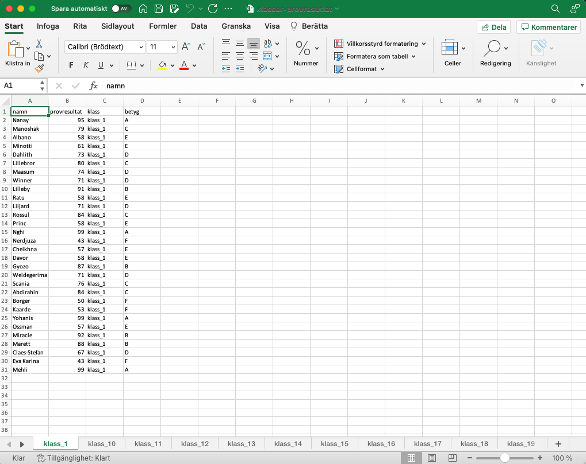

library(tidyverse)Jag har länge varit imponerad av David Stavegård och hans #torsdagstips i Excel där han med konkreta exempel visar hur man löser verkliga databearbetningsproblem med Excel.
Jag har tagit mig friheten att översatta några av dessa #torsdagstips till hur jag skulle lösa dem i programmeringsspråket R.
I det här torsdagstipset har vi Excel-fil med provresultat från en klass och vi vill göra om resultaten till betyg. I Excel använder David funktionen ifs(). I R använder vi funktionen case_when() från paketet dplyr.
Vi laddar paketet tidyverse innehåller flera bra funktioner för vårt problem.
Det här problemet kanske låter banalt, men för mig var det här en av de svårare sakerna att göra när jag började programmera i R. Men så är det, det som känns enkelt idag var svårt igår.
Vi vet att provresultatet ska leda till följande betyg:
- A >= 95
- B >= 85
- C >= 75
- D >= 65
- E >= 55
- F > 54
I mappen data har vi 24 olika klasser med provresultat.
data_filer <- paste0("data/", list.files("data"))
data_filer [1] "data/klass_1.xlsx" "data/klass_10.xlsx" "data/klass_11.xlsx"
[4] "data/klass_12.xlsx" "data/klass_13.xlsx" "data/klass_14.xlsx"
[7] "data/klass_15.xlsx" "data/klass_16.xlsx" "data/klass_17.xlsx"
[10] "data/klass_18.xlsx" "data/klass_19.xlsx" "data/klass_2.xlsx"
[13] "data/klass_20.xlsx" "data/klass_21.xlsx" "data/klass_22.xlsx"
[16] "data/klass_23.xlsx" "data/klass_24.xlsx" "data/klass_3.xlsx"
[19] "data/klass_4.xlsx" "data/klass_5.xlsx" "data/klass_6.xlsx"
[22] "data/klass_7.xlsx" "data/klass_8.xlsx" "data/klass_9.xlsx" Vi kan läsa in en klass med read_excel():
library(readxl)
klass_1 <- read_excel("data/klass_1.xlsx")För att skriva flera “if-else” kan vi använda funktionen case_when() i mutate(), båda från paketet dplyr som laddats i tidyverse.
klass_1 <- klass_1 %>%
mutate(betyg = case_when(
provresultat >= 95 ~ "A",
provresultat >= 85 ~ "B",
provresultat >= 75 ~ "C",
provresultat >= 65 ~ "D",
provresultat >= 55 ~ "E",
provresultat < 55 ~ "F",
))
klass_1# A tibble: 30 × 3
namn provresultat betyg
<chr> <dbl> <chr>
1 Nanay 95 A
2 Manoshak 79 C
3 Albano 58 E
4 Minotti 61 E
5 Dahlith 73 D
6 Lillebror 80 C
7 Maasum 74 D
8 Winner 71 D
9 Lilleby 91 B
10 Ratu 58 E
# … with 20 more rowsVi kan sedan skriva resultatet till mappen provresultat om vi vill ha slutresultatet i Excel.
library(openxlsx)
write.xlsx(klass_1, "provresultat/resultat-klass-1.xlsx")Varför göra det här i R?
Genom att skriva det här som ett skript kan du enkelt byta ut din datafil och kör om resultatet och på så sätt spara tid.
Ett ännu mer effektivt sätt är att iterera över alla klasser, översätta deras resultat till betyg och sedan skriva allt till en Excel, med en flik för varje klass.
Vi börjar meda att skriva en egen funktion:
library(stringr)
read_klass <- function(path){
data <- read_excel(path)
data$klass <- str_extract(path, "klass_[:digit:]+")
data
}
read_klass("data/klass_4.xlsx")# A tibble: 30 × 3
namn provresultat klass
<chr> <dbl> <chr>
1 Mahsuni 41 klass_4
2 Aldiona 57 klass_4
3 Mervis 49 klass_4
4 Niangi 42 klass_4
5 Laxmi 48 klass_4
6 Helgevold 44 klass_4
7 Yayah 100 klass_4
8 Irgens 93 klass_4
9 Frans-Lukas 82 klass_4
10 Stålis 57 klass_4
# … with 20 more rowsVi kan iterera den här funktionen över alla klasser och läsa in allt till en data.frame med map_df() från paketet purrr (också från tidyverse).
library(purrr)
klasser <- map_df(data_filer, read_klass)
klasser# A tibble: 720 × 3
namn provresultat klass
<chr> <dbl> <chr>
1 Nanay 95 klass_1
2 Manoshak 79 klass_1
3 Albano 58 klass_1
4 Minotti 61 klass_1
5 Dahlith 73 klass_1
6 Lillebror 80 klass_1
7 Maasum 74 klass_1
8 Winner 71 klass_1
9 Lilleby 91 klass_1
10 Ratu 58 klass_1
# … with 710 more rowsVi kan enkelt applicera vår betygomräknare till alla klasser:
klasser <- klasser %>%
mutate(betyg = case_when(
provresultat >= 95 ~ "A",
provresultat >= 85 ~ "B",
provresultat >= 75 ~ "C",
provresultat >= 65 ~ "D",
provresultat >= 55 ~ "E",
provresultat < 55 ~ "F",
))
klasser# A tibble: 720 × 4
namn provresultat klass betyg
<chr> <dbl> <chr> <chr>
1 Nanay 95 klass_1 A
2 Manoshak 79 klass_1 C
3 Albano 58 klass_1 E
4 Minotti 61 klass_1 E
5 Dahlith 73 klass_1 D
6 Lillebror 80 klass_1 C
7 Maasum 74 klass_1 D
8 Winner 71 klass_1 D
9 Lilleby 91 klass_1 B
10 Ratu 58 klass_1 E
# … with 710 more rowsNu kan vi spara ner alla betyg till en Excel där varje klass får en egen flik.
library(openxlsx)
wb <- createWorkbook()
klass_till_excel <- function(klass){
klass_df <- filter(klasser, klass == !!klass)
addWorksheet(wb, sheetName = klass)
writeData(wb, sheet = klass, klass_df)
}
unika_klasser <- unique(klasser$klass)
klasser_wb <- map(unika_klasser, klass_till_excel)
saveWorkbook(wb, "provresultat/klasser-provresutlat.xlsx", overwrite = TRUE)
Så enkelt och effektivt!
Appendix: Skapa klasserna
Vi kan börja med att generera en slumpmässig fil med provresultat. Tack vara Peter Dahlgren på Stockholm universitet, som lagt upp en fil med svenska namn, kan vi generera 30 svenska kill- och tjejnamn utan att först behöva skriva dem.
Jag har skapat en enkel funktion för det här som heter skapa_klass() som skapar ett fiktivt dataset med provresultat för \(n\) antal elever. Är du nyfiken kan du läsa den nedan, annars är det bara att hoppa över.
skapa_klass <- function(antal_elever = 30){
män <- read_csv("https://raw.githubusercontent.com/peterdalle/svensktext/master/namn/fornamn-man.csv",
col_names = FALSE, locale = locale(encoding = "UTF-8"))
kvinnor <- read_csv("https://raw.githubusercontent.com/peterdalle/svensktext/master/namn/fornamn-kvinnor.csv",
col_names = FALSE, locale = locale(encoding = "UTF-8"))
alla_namn <- bind_rows(män, kvinnor) %>%
rename(namn = X1)
klass <- tibble(
namn = sample(alla_namn$namn, 30, replace = TRUE),
provresultat = sample(c(40:100), 30, replace = TRUE))
klass
}Nedan skapar vi enkelt klasserna.
library(openxlsx)
skriv_klass <- function(nr){
klass <- skapa_klass(30)
klass_file <- paste0("data/klass", "_", nr, ".xlsx")
write.xlsx(klass, klass_file)
}
map(1:24, skriv_klass)